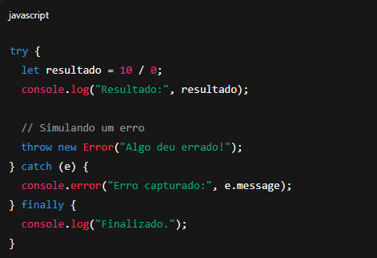
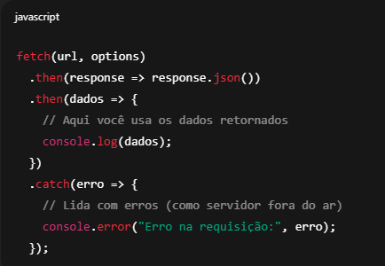
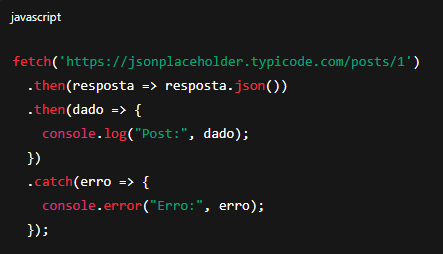
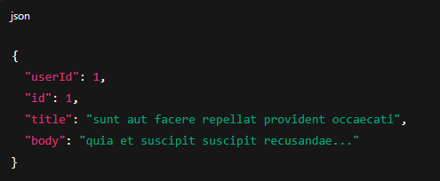
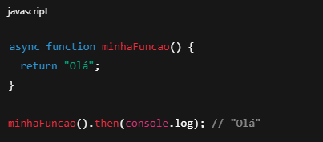
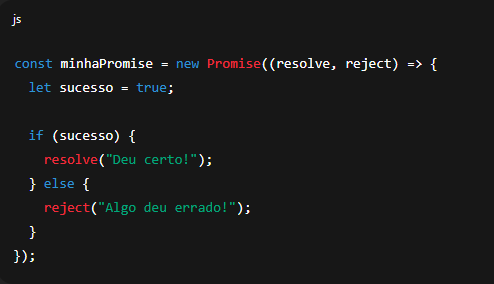
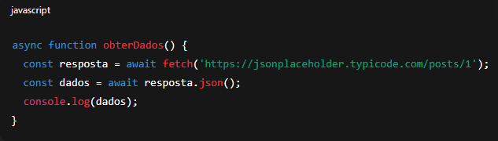
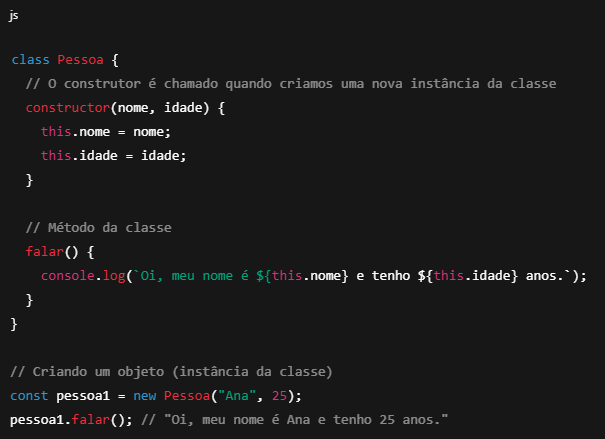
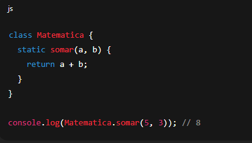
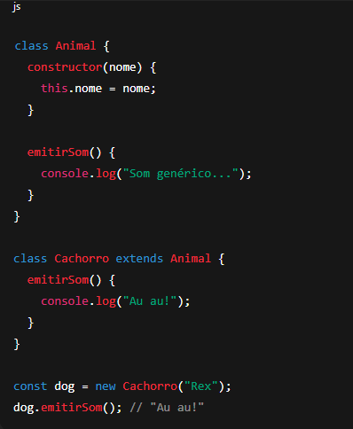

O que é API?
API significa Application Programming Interface (Interface de Programação de Aplicações). Ela permite que dois sistemas se comuniquem, geralmente usando o protocolo HTTP.
📲 Por exemplo: quando um app de celular acessa os dados do seu perfil no servidor — ele está usando uma API!
Como funciona uma API?
Imagine que a API seja um garçom:
- Você (cliente) faz um pedido (requisição)
- O garçom (API) leva até a cozinha (servidor)
- Traz sua comida (resposta)
Testando a API
Você pode testar uma api usando:
- Postman
- Insomnia
- Ou até com o fetch no navegador
Exemplo de uma api com Express (Node.js)
Acesse o linkAPI Rest e Restful
O que é REST?
REST (Representational State Transfer) é um estilo de arquitetura criado por Roy Fielding. Ele define princípios para criar APIs simples, escaláveis e organizadas usando o protocolo HTTP.
O que é API REST?
É uma API que segue o modelo REST. Ou seja, ela usa os verbo HTTP corretos, URLs bem definidas, formato de dados padronizado (como JSON) e respostas consistentes.
O que é API RESTful?
É uma API REST feita corretamente, seguindo todos os princípios REST. Toda API RESTful é REST, mas nem toda API REST é RESTful.
- REST: conjunto de princípios de arquitetura
- RESTful: uma api que segue os princípios rest
Module
O que é um Módulo em JS?
Um módulo é um arquivo separado que exporta partes do seu código (funções, variáveis, classes) e permite importar essas partes em outros arquivos. Módulos ajudam a dividir o código em partes reutilizáveis e organizadas.
✍️ Criando e usando módulos (ESModules)
1. Criando um módulo:
JavaScript
// arquivo: matematica.js
export function somar(a, b) {
return a + b;
}
export const PI = 3.14;
2. Importanto em outro arquivo:
JavaScript
// arquivo: app.js
import { somar, PI } from './matematica.js'; // deve-se importar a partir do
./
console.log(somar(10, 5)); // 15
console.log(PI); // 3.14
💡 Importações só funcionam se:
- Os arquivos forem servidos por um servidor (não por file://)
- O script for definido com type="module" no HTML:
html
script type="module" src="app.js" script
⚙️ Módulos no Node.js (CommonJS vs ESModules)
Node.js (modo antigo - CommonJS):
JavaScript
// arquivo: utils.js
function dobro(n) {
return n * 2;
}
module.exports = { dobro }; /* se tivesse mais coisas para exportar, era só colocar dentro da chave */
JavaScript
// arquivo: app.js
const { dobro } = require('./utils');
console.log(dobro(4)); //
8
Node.js (modo moderno - ESModules):
Você pode usar export/import no Node adicionando "type": "module" no package.json:
json
{
"type": "module"
}
Tratamento de erros
Em JavaScript, o tratamento de erros é feito principalmente com os blocos try, catch, finally e a instrução throw. Eles são usados para lidar com exceções (erros) que ocorrem durante a execução do código, permitindo que você evite que o programa pare abruptamente, em outras palavras evita que o programa quebre.
Sintaxe básica
JavaScript
try {
// Código que pode gerar um erro
} catch (error) {
// Código para lidar com o erro
} finally {
// Código que sempre será executado, independentemente de erro (opcional)
}
Exemplo
Saída:
JavaScript
Resultado: Infinity
Erro capturado: Algo deu errado!
Finalizado.
Explicação
| Parte | Descrição |
| try | Bloco onde você coloca o código que pode gerar um erro. |
| catch | É executado se algum erro ocorrer no try. Você pode acessar o erro com uma variável (e, err, error, etc). |
| finally | (opcional) Sempre será executado, com ou sem erro. Bom para fechar conexões, limpar recursos, etc. |
| throw | Permite lançar manualmente um erro. |
Para que serve o fetch?
O fetch no JavaScript é usado para fazer requisições HTTP (como GET, POST, PUT, DELETE, etc.) para servidores e APIs — ou seja, ele permite buscar ou enviar dados pela internet.
Sintaxe básica
🔸 Exemplo com método GET:
Saída esperada:
🔹 Importante saber:
- O
fetchretorna uma Promise (objeto que representa a conclusão futura (ou falha) de uma operação). - Ele não lança erro automático para códigos HTTP 404 ou 500, então você precisa verificar response.ok:
🔹 O que são async e await e como usar em JavaScript?
async e await são palavras-chave que facilitam o trabalho com Promises em JavaScript. Elas permitem escrever código assíncrono com uma sintaxe mais simples, parecida com código síncrono (linha por linha).
1. async:
Colocado antes de uma função, faz com que ela sempre retorne uma Promise.
O que é uma promise?
Uma Promise em JavaScript é um objeto que representa a eventual conclusão (ou falha) de uma operação assíncrona.
Ou seja, quando você faz algo que leva tempo (como buscar dados de uma API, ler um arquivo, esperar um timer), o JavaScript não para a execução do código — ele usa uma Promise para lidar com esse resultado "no futuro".
Estrutura básica de uma Promise
Uma Promise pode estar em três estados:
- pending (pendente) → a operação ainda não terminou.
- fulfilled (resolvida) → a operação terminou com sucesso.
- rejected (rejeitada) → a operação terminou com erro.
Exemplo de criação de uma Promise
2. await:
Só pode ser usado dentro de funções async. Ele pausa a execução da função até a Promise ser resolvida.
O que é uma classe em JS?
Uma classe em JavaScript é um molde (ou modelo) para criar objetos. Ela define propriedades (características) e métodos (ações) que os objetos criados a partir dela terão.
Analogia com o mundo real
- Classe = uma planta de casa (o molde).
- Instância = uma casa construída a partir dessa planta.
- Você pode ter várias casas diferentes (instâncias) baseadas na mesma planta (classe).
Estrutura básica de uma classe
Métodos estáticos
Métodos static pertencem à classe, não às instâncias.
Herança (extends)
Uma classe pode herdar de outra usando extends.
